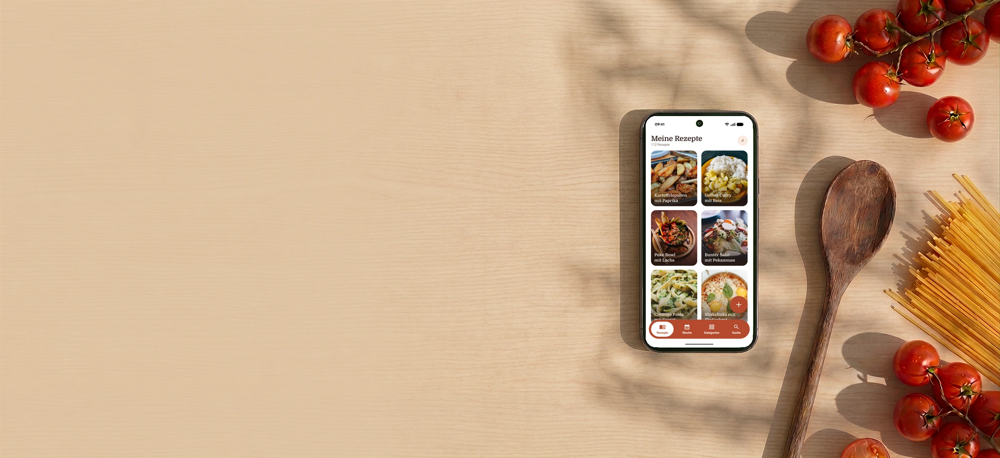
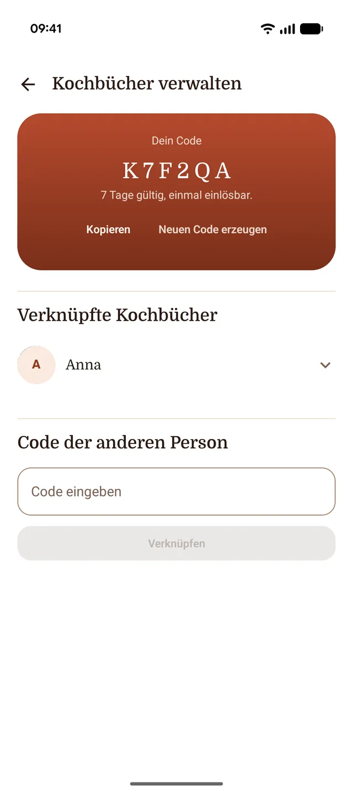
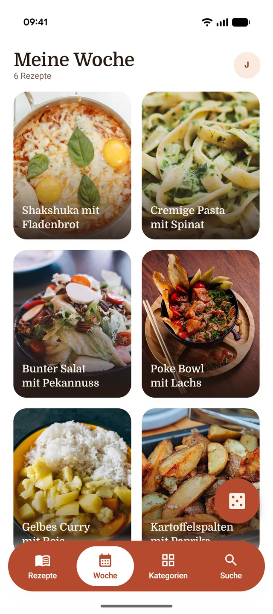
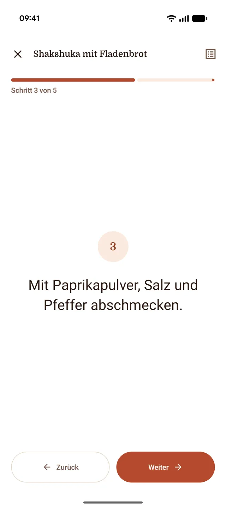

One cookbook for two
A six-character code links your collections. From then on you see both cookbooks as one — and nobody types anything in twice.

You see something on TikTok or Instagram you want to cook, and you share the link with Kochbuch. Back comes a recipe: ingredients, steps, picture. Nothing to type out, nothing to scrub back.
Why Kochbuch
A six-character code links your collections. From then on you see both cookbooks as one — and nobody types anything in twice.
What gets cooked this week lives in one place. And when you cannot agree, the app rolls the week for you.
If your device can do the parsing itself, not a word of the recipe leaves the phone. Only otherwise does our server step in.
Grandma's tray bake is on no reel. That one you type in by hand, with your own photo — and afterwards it sits among all the others.
The first 15 recipes are on us, and they never expire. After that you need a subscription to keep pulling in recipes: every import costs us computing time, and nobody else is paying for it.
Everything you need to get started.
€2.99€29.99 per month, VAT includedper year, VAT included
Billed monthly, cancel any time.
That is €2.50 a month. Cancel any time.
In a caption the quantities sit mid-sentence, between emoji and hashtags, and half the method is only ever spoken in the video. Kochbuch reads both, sorts ingredients from steps and translates what is in German or Italian.
🍋 CREAMY LEMON PASTA ✨ the fastest dinner of the week, promise!! ingredients for 2: 250g linguine, 200g spinach (fresh!), 1 lemon, 150g cream cheese, 2 cloves of garlic, 40g parmesan, olive oil, salt & pepper everything else in the video 👆 don't forget to save #pasta #lemonpasta #weeknightdinner #recipes
Your invitation code sits in the settings. Whoever redeems it sees your recipes from then on, and you see theirs. Each of you can only change your own, and favourites stay private.

One tap puts a recipe into the week, and from the list you can add five at once. When the two of you cannot agree, the app rolls the week for you. Categories nobody fancies right now you leave out beforehand.

In cook mode one step fills the screen, you tick off ingredients as you read them, and the display stays awake. Put the phone down for a while and you come back to the same step.

Voices
Great vibe, just works. I share the reel and the recipe is there before the kettle boils.
Top app. We plan the week together, and when we cannot agree it just rolls the dice.
Finally no more three hundred screenshots in my camera roll that I never find again.